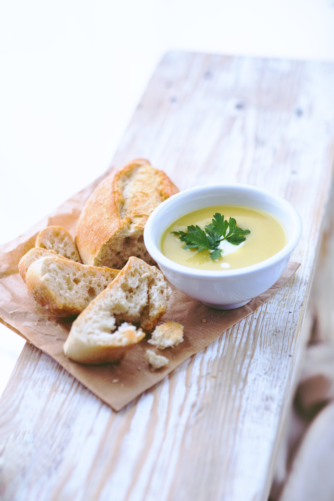

Sausage Soup

Description
Sausage soup is a quick and easy recipe that requires little preparation.
It's also very customizable, with the option to add and remove vegetables,
starches, and seasonings until it is just right.
Ingredients
- Italian sausage
- Heavy cream
- Chicken broth
- Spinach
- Potatoes
- Carrots
Directions
- Brown the sausage. Remove from pot and drain excess grease
- Add potatoes and carrots to pot and saute until softened
- Add chicken broth and bring to a boil. Cover with lid and bring to a simmer
- Once all vegetables are tender, add sausage and spinach,
and cook until spinach is wilted
- Stir in heavy cream. Season to taste
- Enjoy!